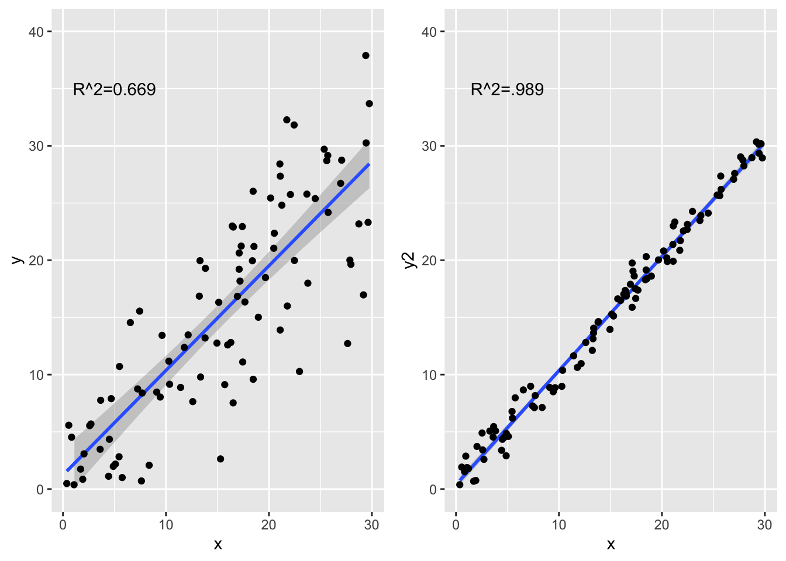
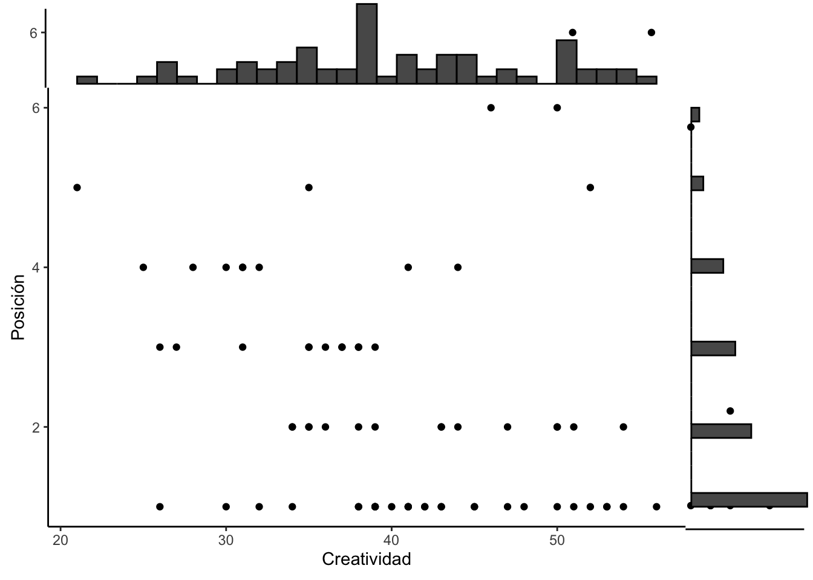

T13_Correlacion
Fecha de la ultima revisión
## [1] "2020-07-30"Install packages
La correlaciones son métodos para evaluar la relación entre dos o más variables.
Ejemplos
- La cantidad de colesterol, LDL (lipoproteínas de baja densidad) y HDL (lipoproteínas de alta densidad).
- La concentración de vitamina C y la absorción de calcio.
- La consumo de alcohol y la concentración de alcohol en la sangre.
Los analísis se hacen comparando las variables continuas en pares. La covarianza es la medida de variabilidad conjunta entre dos variables.
Primero recordamos la formula para calcular la varianza de una variable
\[s^{ 2 }=\frac { \sum _{ i=1 }^{ n }{ (x_{ i }-\bar { x } ) } ^{ 2 } }{ n-1 }\]
Ahora la vamos a descomponer
\[s^{ 2 }=\frac { \sum _{ i=1 }^{ n }{ (x_{ i }-\bar{ x } ) } (x_{ i }-\bar { x } ) }{ n-1 }\] *** # Correlación de Pearson
Esta la más común y conocida como el Coeficiente de correlación de Pearson. Nota ahora que tenemos dos variables x y y.
Podemos ver cual es la relación entre la edad de los estudiantes y cuantas veces fueron a Disney en Orlando, Florida. El objetivo es evaluar el covarianza entre una variable y otra.
| Personas | Maria | Juan | José | Carla | Luis |
|---|---|---|---|---|---|
| Edad (x) | 8 | 9 | 10 | 13 | 15 |
| Veces a Disney (y) | 5 | 4 | 4 | 6 | 8 |
La siguiente formula muestra el calculo para el coeficiente de Pearson \(\rho\) que se dice rho que es el parámetro (el universo). Para significar el coeficiente de una muestra se usa la r. Note el numerador y comparalo con la formula anterior. ven que ahora se toma en cuenta tanto el valor en x y en y.
\[r=\frac { cov(x,y) }{ { s }_{ x }{ s }_{ y } } =\frac { \sum { ({ x }_{ i }-\bar { x } _{ i })({ y }_{ i }-\bar { y } _{ i }) } }{ n-1({ s }_{ x }{ s }_{ y }) }\] Una otra manera de ver como se calcula el coeficiente de Pearson es usar la siguiente formula.
\[r=\frac{\sum_{ }^{ }xy-\left(\frac{\sum_{ }^{ }x\sum_{ }^{ }y}{n}\right)}{\sqrt{\left(\sum_{ }^{ }x^2-\frac{\left(\sum_{ }^{ }x\right)^2}{n}\right)\left(\sum_{ }^{ }y^2-\frac{\left(\sum_{ }^{ }y\right)^2}{n}\right)}}\]
Creamos un conjunto de datos en R para demostrar como se calcula a mano. Necesitamos calcular la suma de x, la suma de y, la suma de los cuadrados de x y y y la suma los productos cruzados (xy).
Edad<-c(8,9,10,13,15)
Disney<-c(5,4,4,6,8)
dfDisney<-data.frame(Edad, Disney) # unir las listas en un data frame
dfDisney$Edad2=dfDisney$Edad^2 # cuadrar las x
dfDisney$Disney2=dfDisney$Disney^2 # cuadrar las y
dfDisney$Edad_por_Disney=dfDisney$Edad*dfDisney$Disney # productos cruzados x*y
dfDisney| Edad | Disney | Edad2 | Disney2 | Edad_por_Disney |
|---|---|---|---|---|
| 8 | 5 | 64 | 25 | 40 |
| 9 | 4 | 81 | 16 | 36 |
| 10 | 4 | 100 | 16 | 40 |
| 13 | 6 | 169 | 36 | 78 |
| 15 | 8 | 225 | 64 | 120 |
library(knitr)
library(kableExtra)
df <- data.frame(Formulas = c("$$\\sum x $$","$$\\sum y$$",
"$$\\sum x^2$$", "$$\\sum y^2$$",
"$$\\sum xy$$"),
Sumas = c(55, 27, 639,157, 314))
knitr::kable(df, align="lr", escape=FALSE)| Formulas | Sumas |
|---|---|
| \[\sum x \] | 55 |
| \[\sum y\] | 27 |
| \[\sum x^2\] | 639 |
| \[\sum y^2\] | 157 |
| \[\sum xy\] | 314 |
Ahora sustituir los valores en la ecuación para calcular el coeficiente de Pearson.
\[r=\frac{314-\left(\frac{55\cdot27}{5}\right)}{\sqrt{\left(639-\frac{\left(55\right)^2}{5}\right)\left(157-\frac{\left(27\right)^2}{5}\right)}}=0.871\] La función para hacer todos estos calculo es cor. Con una correlación de 0.87, esto significa que hay buena correlación positiva entre la edad y la cantidad de veces que han ido a Disney.
cor(Edad, Disney)## [1] 0.8711651Un gráfico de Correlación sencilla.
Parece haber un patrón de cuando aumenta una variable aumenta la otra.
scatter<-ggplot(dfDisney, aes(x=Edad, y=Disney))
scatter + geom_point(colour="purple")+
geom_hline(aes(yintercept=mean(Disney)))+ # las lineas representa el promedio de la variable en *y* los valores
geom_vline(aes(xintercept=mean(Edad))) # las lineas representa el promedio de la variable en *x* los valores *** # El rango del coeficiente Pearson
*** # El rango del coeficiente Pearson
El coeficiente de correlación varía de −1 a 1. El valor de 1 implica que la relación entre X e Y es perfecta y positiva, en otra palabra la x predice exactamente el valor de y. Un valor de -1 implica que los datos predicen una relación negativa perfecta entre la x e y. Cuando el valor de 0 o cerca esto implica que no existe una correlación lineal entre las variables.
Los Supuestos de la prueba de Pearson
Uno de los supuestos de la prueba de análisis de Pearson, es que las dos variables tenga una distribución normal, Nornal bivariada.
Las variables tienen que tener una correlación lineal (por ejemplo: no puede ser cuadrática o logarítmica).
Ausencia de valores átipicos (o por lo menos sesgan el resultado)
Para visualizar una distribución vea lo siguiente. Nota que las dos variables tienen una distribución normal.
Gráfico Bivariado Normal
https://deanattali.com/2015/03/29/ggExtra-r-package/
Para visualizar que quiere decir “bivariado normal” Vamos a crear dos conjuntos de datos cada una con una distribución normal, pero con promedio diferentes y desviación estandar.
library(tidyverse)
a=rnorm(8000, 0, 1)
b=rnorm(8000, 1, 1.1)
df=data.frame(a,b)
out <- stack(df)
ggplot(out, aes(values, colour=ind, fill=ind))+
geom_histogram(bins=50)+
facet_wrap(~ind) Ahora visualizamos las dos variables en el mismo gráfico. y se añade en el margen.
Ahora visualizamos las dos variables en el mismo gráfico. y se añade en el margen.
#install.packages("ggExtra", dependencies = TRUE)
library(ggExtra)
p <- ggplot(df, aes(a, b)) + geom_point() +
theme_classic()
# add marginal histograms
ggExtra::ggMarginal(p, type = "histogram")
Correlación no-paramétricas
Correlación de Kendall
En estadística, el coeficiente de correlación de Kendall se calcula usando los rangos y no los valores originales, es conocido como el coeficiente tau de Kendall (letra griega τ), es una estadística para medir la asociación ordinal ( en otra palabra el orden de los valores) entre dos variables. La prueba de Kendall es una prueba de hipótesis no paramétrica. Entonces no asumo que los datos tenga una distribución normal. El nombre de la prueba proviene de Maurice Kendall quien desarrolló el método en 1938.
La diferencias entre este prueba es que los valores se poner en orden del más pequeño al más grande (en cada variable) y se usa el número del ordenamiento para hacer la prueba.
La correlación de Kendall entre dos variables será alta cuando las observaciones tengan un rango similar (o idéntico para una correlación de +1) (es decir, la posición relativa de las observaciones dentro de la variable: primero, segundo, tercero, etc.) entre las dos variables, y bajo cuando las observaciones tienen un rango diferente (o completamente diferente para una correlación de -1) entre las dos variables.
Aquí un pequeño conjunto de datos como ejemplo de ordenar los datos. Nota que después de ordenarlos datos son estos que se usan para al calculo. La edad de la persona, el número de veces que fueron a Disney y el orden de cada variable.
| Edad | Disney | Orden Edad | Orden Disney |
|---|---|---|---|
| 8 | 8 | 3 | 4 |
| 2 | 2 | 1 | 2 |
| 10 | 12 | 4 | 5 |
| 54 | 0 | 5 | 1 |
| 3 | 6 | 2 | 3 |
Los supuestos de Kendall
- Los pares de observaciones son independientes.
- Se deben medir las dos variables en una escala ordinal, de intervalo o de razón.
- Se supone que existe una relación monotónica entre las dos variables.
Correlación de Spearman
El coeficiente de correlación de rango de Spearman o el \(\rho\) rho de Spearman, desarrollado por Charles Spearman en 1904 era un psicologo. Es una medida no paramétrica de correlación de rango (como la correlación de Kendall). Igual como,la de Kendall usa los rangos para hacer el estadístico, pero usan formulas distinctas.
La correlación de Spearman entre dos variables será alta cuando las observaciones tengan un rango similar (o idéntico para una correlación de +1) (es decir, la posición relativa de las observaciones dentro de la variable: primero, segundo, tercero, etc.) entre las dos variables, y bajo cuando las observaciones tienen un rango diferente (o completamente diferente para una correlación de -1) entre las dos variables.
Los supuestos de Spearman
- Los pares de observaciones son independientes.
- Se deben medir las dos variables en una escala ordinal, de intervalo o de razón.
- Se supone que existe una relación monotónica entre las dos variables.
Comparación entre Kendall y Spearman
La prueba de Kendall tiende a ser más robusta que la Spearman. Lo que esto significa es que cuando el tamaño de muestra es pequeña o hay valores átipicos la prueba de Kendall es preferible.
Los codigos en R para correlación
Como lidiar con “NA” alternativas
Se usa diferentes
use = “everything”, Si Hay 1 “NA” en la los datos, elimina la variable completa use = “complete.obs”, Si hay 1 “NA”, Elimina el individuo que tiene “NA” para todas los cálculos use = “pairwise.complete.obs”, Si hay un “NA”, Elimina el individuo solamente si el par evaluado tiene un “NA”.
#-----Como lidiar con los "NA"
adverts<-c(15,14,14,6,2)
comprasNA<-c(8,9,10,NA,15)
age<-c(5, 12, 16, 9, 14)
advertNA<-data.frame(adverts, comprasNA, age) # el data frame
# "everything", "complete.obs", "pairwise.complete.obs"
head(advertNA)| adverts | comprasNA | age |
|---|---|---|
| 15 | 8 | 5 |
| 14 | 9 | 12 |
| 14 | 10 | 16 |
| 6 | 9 | |
| 2 | 15 | 14 |
cor(advertNA, use = "everything", method = "pearson")## adverts comprasNA age
## adverts 1.0000000 NA -0.2194619
## comprasNA NA 1 NA
## age -0.2194619 NA 1.0000000cor(advertNA, use = "complete.obs", method = "pearson")## adverts comprasNA age
## adverts 1.0000000 -0.9794293 -0.3799803
## comprasNA -0.9794293 1.0000000 0.5486947
## age -0.3799803 0.5486947 1.0000000cor(advertNA, use = "pairwise.complete.obs", method = "pearson") # Comúnmente usado. ## adverts comprasNA age
## adverts 1.0000000 -0.9794293 -0.2194619
## comprasNA -0.9794293 1.0000000 0.5486947
## age -0.2194619 0.5486947 1.0000000La pruebas con los métodos de Kendall y Spearman
cor(advertNA, use = "pairwise.complete.obs", method = "kendall") ## adverts comprasNA age
## adverts 1.0000000 -0.9128709 -0.3162278
## comprasNA -0.9128709 1.0000000 0.6666667
## age -0.3162278 0.6666667 1.0000000cor(advertNA, use = "pairwise.complete.obs", method = "spearman") # n=30 o más## adverts comprasNA age
## adverts 1.0000000 -0.9486833 -0.4103913
## comprasNA -0.9486833 1.0000000 0.8000000
## age -0.4103913 0.8000000 1.0000000Ejemplo de Anxiedad y correlaciones
Correlación entre ansiedad, la nota de examen y el tiempo que estudio el estudiante.
Anxiety data
library(readr)
Exam_Anxiety <- read_csv("~/Google Drive/Biometry/Biometria 2015/Biometria_2015_RStudio/Data files/Exam_Anxiety.csv")
examData=Exam_Anxiety
head(examData)| Code | Revise | Exam | Anxiety | Gender |
|---|---|---|---|---|
| 1 | 4 | 40 | 86.3 | Male |
| 2 | 11 | 65 | 88.7 | Female |
| 3 | 27 | 80 | 70.2 | Male |
| 4 | 53 | 80 | 61.3 | Male |
| 5 | 4 | 40 | 89.5 | Male |
| 6 | 22 | 70 | 60.5 | Female |
Correlación entre anxiedad, la nota del examen y el tiempo de estudio (revise) para 103 estudiantes.
En el primer chunk se demuestra como se hace el análisis entre dos variables
cor(examData$Exam, examData$Anxiety, use = "pairwise.complete.obs",
method = 'pearson')## [1] -0.4409934Ahora podemos hacer el calculo de las tres variables junta.esta función permite hacer todos los calculos.
examData2 <- examData[, c("Exam", "Anxiety", "Revise")]
head(examData2)| Exam | Anxiety | Revise |
|---|---|---|
| 40 | 86.3 | 4 |
| 65 | 88.7 | 11 |
| 80 | 70.2 | 27 |
| 80 | 61.3 | 53 |
| 40 | 89.5 | 4 |
| 70 | 60.5 | 22 |
cor(examData2) # rango entre -1 to + 1, 0 o cerca significa que no hay patrón. ## Exam Anxiety Revise
## Exam 1.0000000 -0.4409934 0.3967207
## Anxiety -0.4409934 1.0000000 -0.7092493
## Revise 0.3967207 -0.7092493 1.0000000cor(examData[, c("Exam", "Anxiety", "Revise")])## Exam Anxiety Revise
## Exam 1.0000000 -0.4409934 0.3967207
## Anxiety -0.4409934 1.0000000 -0.7092493
## Revise 0.3967207 -0.7092493 1.0000000R^2: El coeficiente de determinación.
El coeficiente de determinación es una medida de la proporción de la varianza explica por la variable dependiente (en x). La correlación explica la influencia de la relación entre la x e y, la \[R^2\] explica cuanto de la varianza en una variable explica la varianza en la otra variable. El rango es 0 a 100, un \[R^2=0.20\] es que la dependiente explica solamente 20% de la varianza da la independiente.
Podemos visualizar el coeficiente de determinación con unos gráficos.
- Se crea dos conjunto de datos uno que tiene más variación que el otro
- Calcula el coeficiente de Pearson y el coeficiente de determinación
- Se añade todo los gráficos.
library(tidyverse)
x=runif(100, 0, 30)
y=rnorm(100, 1, .1)*x+rnorm(100,0,5)
xy=tibble(x,y)
y2=rnorm(100, 1, .01)*x+rnorm(100,0,1)
xycorD=(cor(x,y))^2
xycorD## [1] 0.7058419xycorD2=(cor(x,y2))^2
xycorD2## [1] 0.9859625La diferencia no es la pendiente es solamente cuan disperso están los datos alrededor de la correlación lineal.
R2a=ggplot(xy, aes(x,y))+
geom_smooth(method = lm)+
geom_point()+
annotate(geom = "text", x=5, y=35, label="R^2=0.669")+
ylim(0,40)
R2b=ggplot(xy, aes(x,y2))+
geom_smooth(method = lm)+
geom_point()+
annotate(geom = "text", x=5, y=35, label="R^2=.989")+
ylim(0,40)
library(gridExtra)
grid.arrange(R2a,R2b,ncol=2) ***
La prueba de correlación
Uno puede hacer una prueba para determinar si la correlación es significativamente diferente de cero. Recuerda que cuando el coeficiente es en cero o cerca de cero esto significa que NO hay correlación entre las dos variables.
Entonces la hipótesis nula y alterna son las siguientes.
- Ho: r = 0 (es cerca de cero considerando la variación)
- Ha: r ≠ 0 (entonces la correlación es positiva o negativa)
La función es corr.test()
En adición de determinar si el coeficiente es diferente de cero esta función calcula el intervalo de 95% de confianza del coeficiente. Nota que el coeficiente es 0.81 con un intervalo de confianza entre 0.74-0.87. Si el intervalo solapa el cero la hipótesis nula no sera rechazado.
cor.test(x, y, method="pearson")##
## Pearson's product-moment correlation
##
## data: x and y
## t = 15.335, df = 98, p-value < 2.2e-16
## alternative hypothesis: true correlation is not equal to 0
## 95 percent confidence interval:
## 0.7709472 0.8897380
## sample estimates:
## cor
## 0.840144El mejor mentiroso.
El mentiroso más grande del mundo es una competencia anual para decir mentiras, que se celebra en Cumbria, Inglaterra, en el Stanton Inn Bridge Pub. Aquí ben el pub (bar) donde tiene la competencia. Este cuento proviene del libro de Field et al. y de http://lakelandhuntingmemories.com/auldWillRitson2New.html.
library(knitr)
library(png)
img4_path<-"Graficos/Stanton.png"
include_graphics(img4_path) *** Esta competencia es en honor a un hombre que era dueño o que tenia a cargo un “pub” en el siglo 19, su nombre era “Auld Will Ritson; b. 1808-1890”. El era conocido por sus cuentos y historia de folclor de la región. Muchas de estas história no se sabia si eran ciertas o no estos cuentos. Por ejemplo el aseguraba que se acordaba del día que fue bautizado (puede ser que si porque en estos momentos no todos los bautizado se hacia los primeros día del nacer.
*** Esta competencia es en honor a un hombre que era dueño o que tenia a cargo un “pub” en el siglo 19, su nombre era “Auld Will Ritson; b. 1808-1890”. El era conocido por sus cuentos y historia de folclor de la región. Muchas de estas história no se sabia si eran ciertas o no estos cuentos. Por ejemplo el aseguraba que se acordaba del día que fue bautizado (puede ser que si porque en estos momentos no todos los bautizado se hacia los primeros día del nacer.
Creatividad = variable continua Posición = es una variable ordenal que va de 1 al 6, recuerda que si está en posición uno es que gano el concurso. Principiante - es una variable binomial, hay solamente dos alternativas. o es principiante (0) o participado en el concurso antes (1).
Se usa el conjunto de datos de “The biggest liar” data
library(ggplot2)
library(readr)
The_Biggest_Liar <- read_csv("Data_files_csv/The Biggest Liar.csv")
mentirosos=The_Biggest_Liar
summary(mentirosos)## Creativity Position Novice
## Min. :21.00 Min. :1.000 Min. :0.0000
## 1st Qu.:35.00 1st Qu.:1.000 1st Qu.:0.0000
## Median :39.00 Median :2.000 Median :1.0000
## Mean :39.99 Mean :2.221 Mean :0.5147
## 3rd Qu.:45.25 3rd Qu.:3.000 3rd Qu.:1.0000
## Max. :56.00 Max. :6.000 Max. :1.0000Como cambiar el nombre de la variables
names(mentirosos)[1]=paste("Creatividad") # se cambia el nombre de la primera columna
names(mentirosos)[2]=paste("Posición") # se cambia el nombre de la segunda columna
names(mentirosos)[3]=paste("Principiante") # se cambia el nombre de la tercera columna
head(mentirosos)| Creatividad | Posición | Principiante |
|---|---|---|
| 53 | 1 | 0 |
| 36 | 3 | 1 |
| 31 | 4 | 0 |
| 43 | 2 | 0 |
| 30 | 4 | 1 |
| 41 | 1 | 0 |
Primer paso evaluar si las variables tienen distribución normal bivariado. Si lo es entonces se usa Pearson, si no se debería usar Kendall or Spearman. Lo que uno observa es la variable de creatividad se acerca a un normal, pero la variable de posición. Por consecuencia no se debería usar la correlación de Pearson.
p <- ggplot(mentirosos, aes(Creatividad, Posición)) +
geom_point() +
theme_classic()
p
# add marginal histograms
ggExtra::ggMarginal(p, type = "histogram")
Prueba de correlación entre la creatividad y la posición en el concurso. Vemos que este caso ambas pruebas tiene el mismo resultado que se rechaza la hipótesis nula y que la creatividad esta relacionado con la posición en el concurso.
cor.test(mentirosos$Posición, mentirosos$Creatividad, method = "spearman")##
## Spearman's rank correlation rho
##
## data: mentirosos$Posición and mentirosos$Creatividad
## S = 71948, p-value = 0.00172
## alternative hypothesis: true rho is not equal to 0
## sample estimates:
## rho
## -0.3732184cor.test(mentirosos$Posición, mentirosos$Creatividad, method = "kendall")##
## Kendall's rank correlation tau
##
## data: mentirosos$Posición and mentirosos$Creatividad
## z = -3.2252, p-value = 0.001259
## alternative hypothesis: true tau is not equal to 0
## sample estimates:
## tau
## -0.3002413La visualización de la corelación entre las dos variables
ggplot(mentirosos,aes(Creatividad, Posición))+
geom_point()